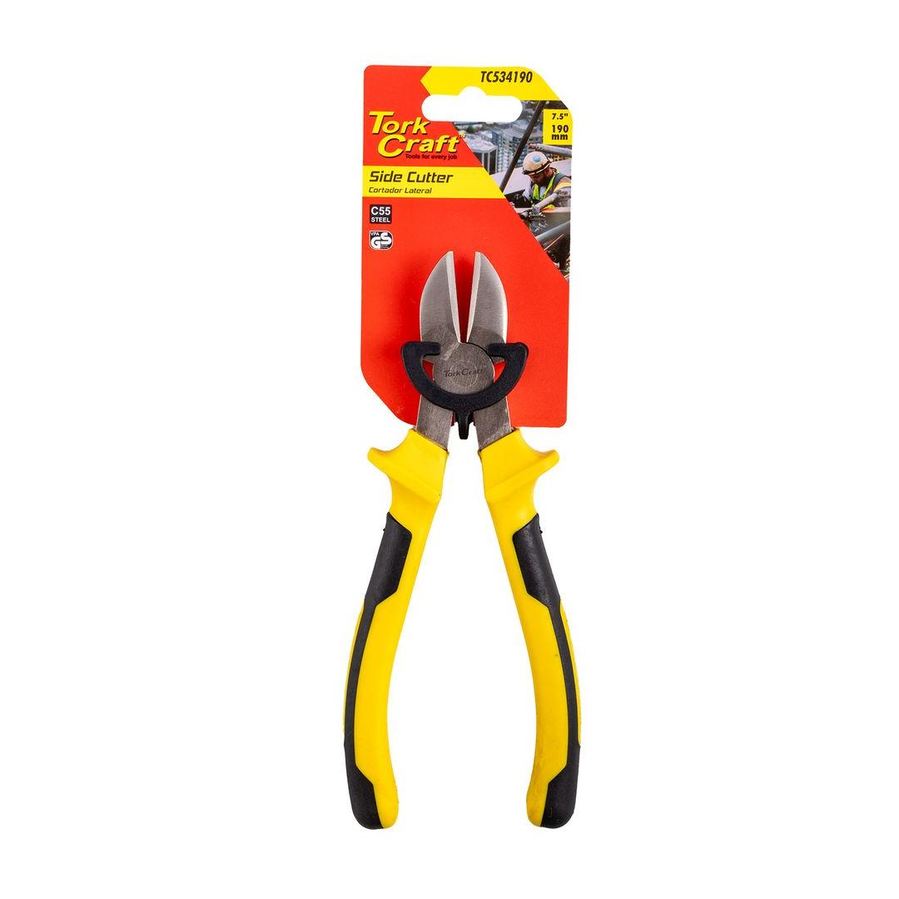

TC534190
184.58

Length: 190mm
A must-have for any toolkit, these 190mm side / diagonal cutting pliers are engineered for precision and durability. Featuring hardened steel jaws that can effortlessly snip through various materials, from copper wire to plastic components, their design ensures a clean and accurate cut every time. The ergonomic, anti-slip handles provide a comfortable and secure grip, reducing hand fatigue during prolonged use, while the polished, rust-resistant finish ensures long-lasting performance. Whether you&re a professional electrician, a DIY enthusiast, or a hobbyist, these versatile and reliable pliers are ideal for cutting, stripping, and trimming in tight spaces, making them an essential tool for a wide range of tasks.
Application: